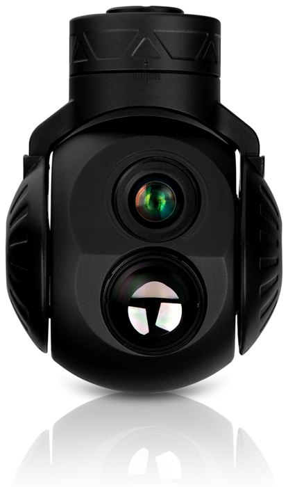

QIANJUE QP-64DA
Двухосевой двухканальный гимбал
- Габариты
- ≤Ø64×88,5 мм
- Масса
- ≤260 г
- Тепловизор
- 640×512
- Защита
- IP54
Все характеристики
| Видимый канал | |
|---|---|
| Диапазон | 0,4–0,9 мкм |
| Разрешение | 2688×1520 |
| Размер пикселя | 2,9 мкм |
| Фокусное расст. | 8,5 мм/F1.6 |
| Угол поля зрения | 47,2°×26,5° |
| Дальн. обнаружения | чел. 0,73 км, авто 3,3 км |
| Дальн. распознавания | чел. 0,2 км, авто 0,8 км |
| Тепловизионный канал | |
| Диапазон | 8–14 мкм |
| Разрешение | 640×512 |
| Размер пикселя | 12 мкм |
| Фокусное расст. | 19 мм/F1.0 |
| Угол поля зрения | 23°×18,4° |
| Дальн. обнаружения | чел. 0,53 км, авто 2,5 км |
| Дальн. распознавания | чел. 0,19 км, авто 0,8 км |
| Управление приводами | |
| Диап. по азимуту | ±145° |
| Диап. по углу места | −90°…+30° |
| Макс. угл. скорость | ≥60°/с |
| Макс. угл. ускорение | ≥150°/с² |
| Сопровождение одной цели | |
| Тип цели | универсальная |
| Скорость сопровождения | ≥32 пикс./кадр |
| Частота обновления | ≥50 к/с |
| Сопровождение нескольких целей | |
| Типы целей | люди, авто, суда, самолёты |
| Полнота | ≥90% |
| Точность | ≥80% |
| Мин. размер цели | 32×32 @1080P |
| Кол-во целей | ≥20 |
| Частота сбоев ID | ≤15% |
| Частота обновления | ≥20 к/с |
| Видео и хранение | |
| Формат фото | JPEG |
| Формат видео | MP4 |
| Кодирование | H.264, H.265 |
| Протокол видео | RTSP, UDP |
| Хранилище | 32/64/128 ГБ |
| Габариты и интерфейсы | |
| Габариты | ≤Ø64×88,5 мм |
| Масса | ≤260 г |
| Питание | 11–28 В DC |
| Потребление | 10 Вт (сред.) / 20 Вт (пик.) |
| Связь | послед. порт, Ethernet |
| Видео | Ethernet |
| Условия эксплуатации | |
| Раб. температура | −40…+60 °C |
| Темп. хранения | −45…+70 °C |
| Ударостойкость | 200g |
| Степень защиты | IP54 |
ЦенаПо запросу